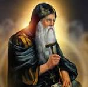

"القديسون الذين في الأرض والأفاضل كل مسرتي بهم"
القديس الأنبا أنطونيوس هو أب الرهبان، وأحد أعظم القديسين في تاريخ الكنيسة القبطية الأرثوذكسية. وُلد في بلدة قمن العروس بمحافظة بني سويف حوالي عام 251م، وترك العالم من أجل حياة الصلاة والنسك والتفرغ لله.
بعد وفاة والديه وزّع القديس الأنبا أنطونيوس أمواله على الفقراء، واختار أن يعيش حياة الوحدة في البرية. ذهب إلى الصحراء الشرقية، وهناك عاش حياة مليئة بالصلاة والصوم والجهاد الروحي. يُعتبر الأنبا أنطونيوس أب الرهبنة في العالم، لأنه وضع أساس الحياة الرهبانية التي انتشرت في كل الكنيسة.
كان القديس الأنبا أنطونيوس يعلم أن بداية الطريق الروحي هي معرفة الإنسان لنفسه، والثبات في الصلاة، والاتكال الكامل على الله. ومن أقواله المشهورة: "لا تحزن إذا كنت غريبًا عن العالم، لأنك صرت قريبًا من الله."
يقع دير القديس الأنبا أنطونيوس في الصحراء الشرقية بالقرب من البحر الأحمر، وهو من أقدم الأديرة في العالم، ولا يزال مكانًا للصلاة والعبادة حتى اليوم.